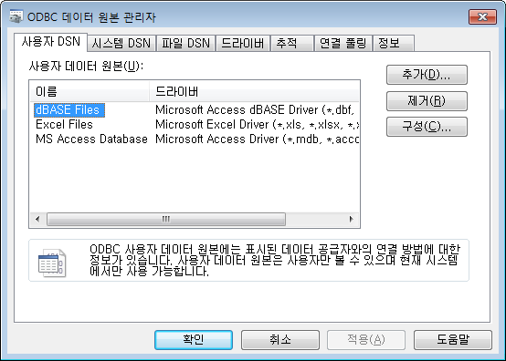
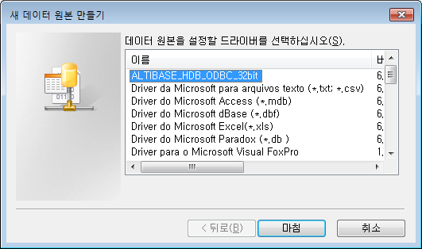
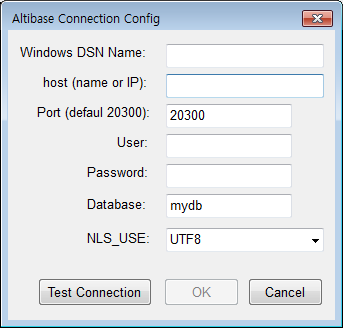
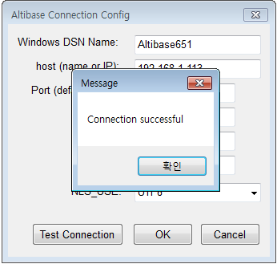
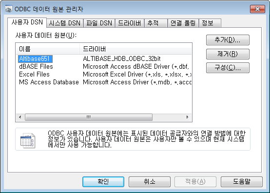

개요
Windows Server 2003 64-bit 시스템에 32-bit ODBC 드라이버를 설정하는 방법에 관해 설명합니다.
버전
~ Altibase 6.5.1
Altibase ODBC 설치
- Windows Altibase 32-bit 클라이언트 설치 파일 또는 Altibase 32-bit ODBC 설치 파일을 다운로드 합니다.
다운로드 경로 : http://support.altibase.com/kr/product
클라이언트 설치 파일 이름 예 : altibase-HDB-client-x.x.x.x.x-WINDOWS-X86-32bit-release.exe
ODBC 설치 파일 이름 예 : altibase-HDB-ODBC-x.x.x.x.x-WINDOWS-X86-32bit-release.exe - Windows Altibase 32-bit 클라이언트를 설치합니다.
설치 방법은 Installation Guide 매뉴얼에서 2. 패키지 인스톨러를 이용한 제품 설치 -> 윈도우에서 ALTIBASE HDB 클라이언트 제품 설치 부분을 참고합니다.
매뉴얼 다운로드 : http://support.altibase.com/kr/manual
ODBC 설정
- 32-bit ODBC 용 데이터 원본 관리자를 실행합니다.
C:\windows\sysWOW64\odbcad32.exe 를 더블클릭합니다.
- 새 데이터 원본 만들기
ODBC 데이터 원본 관리자 창의 사용자 'DSN 탭'에서 '추가' 버튼을 클릭하여 새 데이터 원본 만들기 창을 엽니다.
Altibase 32-bit ODBC 드라이버를 선택하고 '마침'을 누릅니다.
- 'Altibase Connection Config' 창이 뜨면 Altibase 서버 접속 정보를 입력합니다.

● Windows DSN Name
데이터 원본의 이름을 사용자가 지정하여 입력합니다.
● host (name or IP)
Altibase 서버의 IP를 입력합니다.
● Port (default 20300)
Altibase 서버의 서비스 포트를 입력합니다.
altibase.properties 파일(Altibase 서버 프로퍼티 파일)에서 PORT_NO 값을 확인하거나 Altibase 서버에서 ALTIBASE_PORT_NO 환경변수 값을 확인합니다.
● User
데이터베이스 사용자 이름을 입력합니다.
● Password
데이터베이스 사용자 비밀번호를 입력합니다.
● Database
데이터베이스 이름을 입력합니다.
데이터베이스 이름은 SELECT DB_NAME FROM V$DATABASE; 로 확인할 수 있습니다.
● NLS_USE
Altibase 서버 캐릭터셋을 입력합니다.
Altibase 서버 캐릭터셋은 SELECT NLS_CHARACTERSET FROM V$NLS_PARAMETERS; 로 확인합니다. - Test Connection 버튼을 클릭하여 접속 여부를 확인합니다.
 - 사용자 DSN 탭에 추가된 Altibase DSN 을 확인합니다.

{kind=link}
{kind=link}
{kind=link}
{kind=link}
{kind=link}
{kind=link}
{kind=link}
{kind=link}
{kind=link}